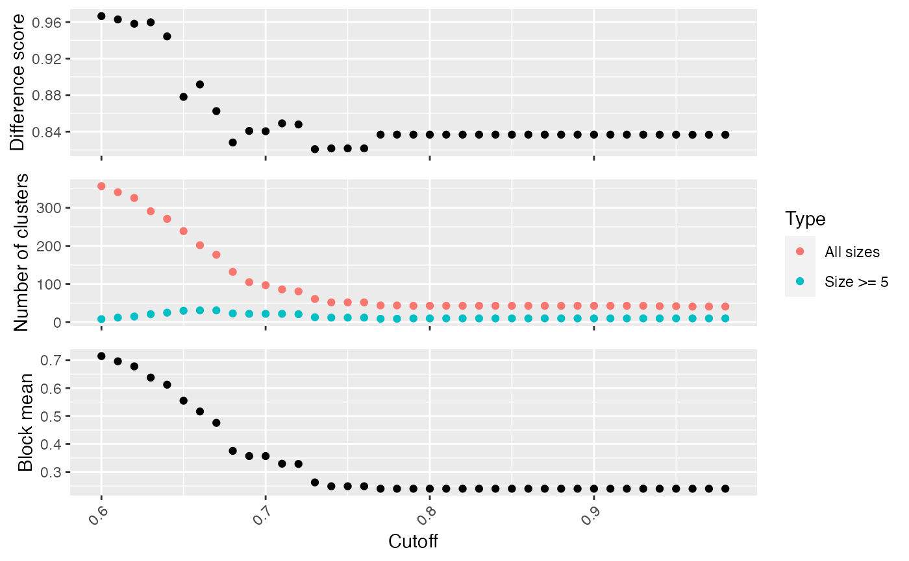

select_cutoff.RdSelect the cutoff for binary cut
select_cutoff(mat, cutoff = seq(0.6, 0.98, by = 0.01), verbose = TRUE, ...)
| mat | A similarity matrix. |
|---|---|
| cutoff | A list of cutoffs to test. Note the range of the cutoff values should be inside [0.5, 1]. |
| verbose | Whether to print messages. |
| ... | Pass to |
Binary cut is applied to each of the cutoff and the clustering results are evaluated by following metrics:
difference score, calculated by difference_score.
number of clusters.
block mean, which is the mean similarity in the blocks in the diagonal of the heatmap.
# \donttest{ mat = readRDS(system.file("extdata", "random_GO_BP_sim_mat.rds", package = "simplifyEnrichment")) select_cutoff(mat)#> 1/39, cutoff = 0.6... #> 2/39, cutoff = 0.61... #> 3/39, cutoff = 0.62... #> 4/39, cutoff = 0.63... #> 5/39, cutoff = 0.64... #> 6/39, cutoff = 0.65... #> 7/39, cutoff = 0.66... #> 8/39, cutoff = 0.67... #> 9/39, cutoff = 0.68... #> 10/39, cutoff = 0.69... #> 11/39, cutoff = 0.7... #> 12/39, cutoff = 0.71... #> 13/39, cutoff = 0.72... #> 14/39, cutoff = 0.73... #> 15/39, cutoff = 0.74... #> 16/39, cutoff = 0.75... #> 17/39, cutoff = 0.76... #> 18/39, cutoff = 0.77... #> 19/39, cutoff = 0.78... #> 20/39, cutoff = 0.79... #> 21/39, cutoff = 0.8... #> 22/39, cutoff = 0.81... #> 23/39, cutoff = 0.82... #> 24/39, cutoff = 0.83... #> 25/39, cutoff = 0.84... #> 26/39, cutoff = 0.85... #> 27/39, cutoff = 0.86... #> 28/39, cutoff = 0.87... #> 29/39, cutoff = 0.88... #> 30/39, cutoff = 0.89... #> 31/39, cutoff = 0.9... #> 32/39, cutoff = 0.91... #> 33/39, cutoff = 0.92... #> 34/39, cutoff = 0.93... #> 35/39, cutoff = 0.94... #> 36/39, cutoff = 0.95... #> 37/39, cutoff = 0.96... #> 38/39, cutoff = 0.97... #> 39/39, cutoff = 0.98...# }